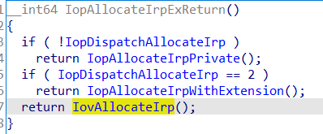
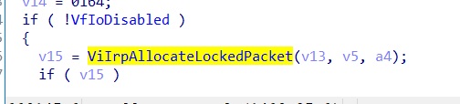
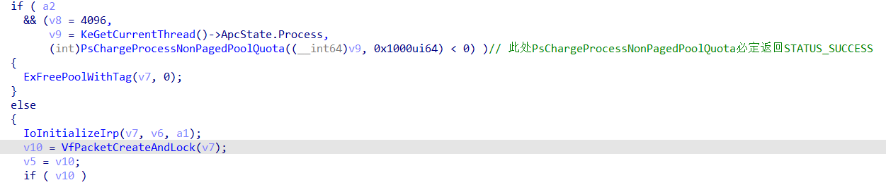
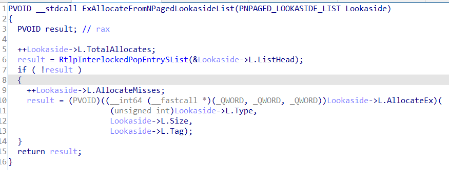
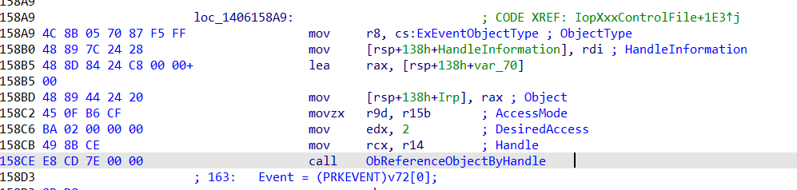

Windows内核不触发PG Hook NtDeviceIoControlFile
1.前言
注意: 请勿将本贴中所涉及的技术以及源码用于非法用途!
兼容性: 目前经过不同系统环境下的测试,能稳定兼容win7以及win10全版本
项目地址: CS1ime/DICHook: Hook NtDeviceIoControlFile with PatchGuard (github.com)
2.思路
通过对NtDeviceIoControlFile函数的逆向分析,发现该函数存在这样的一条调用链:
NtDeviceIoControlFile会调用IopAllocateIrpExReturn申请irp内存
当IopDispatchAllocateIrp = 1时, IopAllocateIrpExReturn调用IovAllocateIrp
当VfIoDisabled = 0 时, IovAllocateIrp调用ViIrpAllocateLockedPacket
ViIrpAllocateLockedPacket调用VfPacketCreateAndLock
VfPacketCreateAndLock会调用ExAllocateFromNPagedLookasideList,从而调用ViPacketLookaside.L. AllocateEx
而ViPacketLookaside.L. AllocateEx这个函数地址是可以被随便更改的,我们可以在这个时机拿到堆栈中调用者原先传入的参数,对参数进行任意修改
3.实现过程
安装hook的过程是DICHook.cpp文件里的InstallHook函数实现的
前面是定位各种函数和数据地址(搜的好累…)
Hook ViPacketLookaside.L. AllocateEx
将ViPacketLookaside.L.AllocateEx替换成如下shellcode模板
push rax
push rbx
push rcx
push rdx
push rsi
push rdi
push rbp
push r8
push r9
push r10
push r11
push r12
push r13
push r14
push r15
pushf
lea rcx,[rsp+0x80] ;参数1是堆栈指针
movabs rax,0x10000000000 ;回调函数地址
xor rax,0x7fffffff
xchg rbx,rax
call WinAPI_EnterStack ;强制对齐堆栈
call rbx
call WinAPI_ExitStack
popf
pop r15
pop r14
pop r13
pop r12
pop r11
pop r10
pop r9
pop r8
pop rbp
pop rdi
pop rsi
pop rdx
pop rcx
pop rbx
pop rax
push rax ;这是一个不修改寄存器的jump
mov DWORD PTR [rsp],0x10000000 ;跳转地址高4字节
mov DWORD PTR [rsp+0x4],0x10000000 ;跳转地址低4字节
ret
WinAPI_EnterStack:
lea r11,[rsp+0x8]
and rsp,0xfffffffffffffff0
push r11
push r11
sub rsp,0x30
jmp QWORD PTR [r11-0x8]
WinAPI_ExitStack:
pop r11
add rsp,0x38
pop rsp
jmp r11
为了防止RtlpInterlockedPopEntrySList返回非0值,将ViPacketLookaside.L.ListHead. Region值设为0
填充shellcode模板,使其触发回调函数DICHook.cpp! DispatchCallback
PUCHAR pcode = (PUCHAR)ExAllocatePool(NonPagedPool, 0x500);
memcpy(pcode, shellcode, sizeof(shellcode));
*(ULONG64 *)(pcode + 0x22) = ((ULONG64)DispatchCallback) ^ 0x7fffffff; //回调函数
//ViPacketLookaside.Region=0
//防止RtlpInterlockedPopEntrySList返回非0值
*(ULONG64*)(ViPacketLookaside + 0x8) = 0;
//修改ViPacketLookaside.AllocateEx
ULONG64 pfn = *(ULONG64*)(ViPacketLookaside + 0x30);
LARGE_INTEGER Addr;
Addr.QuadPart = (ULONG64)MyAllocEx; //使ViPacketLookaside.L. AllocateEx最终返回0
*(ULONG *)(pcode + 0x5A) = Addr.LowPart;
*(ULONG *)(pcode + 0x62) = Addr.HighPart;
InterlockedExchange64((volatile LONG64*)(ViPacketLookaside + 0x30), (LONG64)pcode);
然后将IopDispatchAllocateIrp赋值为1,VfIoDisabled赋值为0.
此时已经实现了系统中每次调用NtDeviceIoControlFile函数会经过如下路径来触发DICHook.cpp! DispatchCallback
NtDeviceIoControlFile->IopXxxControlFile->IopAllocateIrpExReturn->IovAllocateIrp->ViIrpAllocateLockedPacket->VfPacketCreateAndLock->ExAllocateFromNPagedLookasideList->ViPacketLookaside.L. AllocateEx->DICHook.cpp! DispatchCallback
寻找参数
NtDeviceIoControlFile函数原型如下
__kernel_entry NTSTATUS NtDeviceIoControlFile(
[in] HANDLE FileHandle,
[in] HANDLE Event,
[in] PIO_APC_ROUTINE ApcRoutine,
[in] PVOID ApcContext,
[out] PIO_STATUS_BLOCK IoStatusBlock,
[in] ULONG IoControlCode,
[in] PVOID InputBuffer,
[in] ULONG InputBufferLength,
[out] PVOID OutputBuffer,
[in] ULONG OutputBufferLength
);
Windows x64调用约定是前4个参数分别用寄存器rcx,rdx,r8,r9存放,第5个开始参数存放在堆栈里, 也就是前4个参数在函数被调用时不会直接出现在参数堆栈里,而NtDeviceIoControlFile前4个参数里最重要的是FileHandle参数
IopXxxControlFile有一处是调用ObReferenceObjectByHandle将输入的FileHandle转换为对应的Object并保存在堆栈里,所以拿到堆栈里的Object就行啦
那么问题来了…如何获取每个系统的堆栈中参数偏移?
经过几天的思考后,我想到了一个可行的方案:
模拟调用一次NtDeviceIoControlFile,触发DICHook.cpp! DispatchCallback时通过搜索传入的参数来得到每个系统的堆栈中参数偏移
编写以下代码来测试参数偏移:
VOID TestDeviceIoControl() {
HANDLE FileHandle = 0;
UNICODE_STRING name;
RtlInitUnicodeString(&name, L"\\??\\C:");
OBJECT_ATTRIBUTES oa;
InitializeObjectAttributes(&oa, &name, OBJ_CASE_INSENSITIVE, 0, 0);
IO_STATUS_BLOCK iosb;
RtlZeroMemory(&iosb, sizeof(IO_STATUS_BLOCK));
NTSTATUS stats = ZwCreateFile(&FileHandle, FILE_GENERIC_READ, &oa, &iosb, 0, FILE_ATTRIBUTE_NORMAL, FILE_SHARE_READ | FILE_SHARE_WRITE | FILE_SHARE_DELETE, FILE_OPEN_IF, FILE_SYNCHRONOUS_IO_NONALERT | FILE_NON_DIRECTORY_FILE, 0, 0);
RtlZeroMemory(&iosb, sizeof(IO_STATUS_BLOCK));
PFILE_OBJECT obj = 0;
OBJECT_HANDLE_INFORMATION objhandle = { 0 };
RtlZeroMemory(&objhandle, sizeof(objhandle));
stats = ObReferenceObjectByHandle(FileHandle, 0, *IoFileObjectType, KernelMode, (PVOID *)&obj, &objhandle);
if (!NT_SUCCESS(stats)) {
ZwClose(FileHandle);
KeBugCheck(0x56009);
}
ObDereferenceObject(obj);
Search_Object = (ULONG64)obj;
typedef NTSTATUS
(*NTAPI fnNtDeviceIoControlFile)(
_In_ HANDLE FileHandle,
_In_opt_ HANDLE Event,
_In_opt_ PIO_APC_ROUTINE ApcRoutine,
_In_opt_ PVOID ApcContext,
_Out_ PIO_STATUS_BLOCK IoStatusBlock,
_In_ ULONG IoControlCode,
_In_reads_bytes_opt_(InputBufferLength) PVOID InputBuffer,
_In_ ULONG InputBufferLength,
_Out_writes_bytes_opt_(OutputBufferLength) PVOID OutputBuffer,
_In_ ULONG OutputBufferLength
);
fnNtDeviceIoControlFile pNtDeviceIoControlFile = (fnNtDeviceIoControlFile)KGetProcAddress(KGetNtoskrnl(), "NtDeviceIoControlFile");
UCHAR Input[4] = { 0 };
UCHAR Output[4] = { 0 };
ULONG64 Magic[2];
Magic[0] = 0x1122334455667788; //Magic1
Magic[1] = 0x8877665544772299; //Magic2
pNtDeviceIoControlFile(FileHandle, 0, 0, 0, &iosb, IOCTL_NDIS_QUERY_GLOBAL_STATS, Input, 4, Output, 4);
ZwClose(FileHandle);
}
当运行以上代码时,触发DICHook.cpp! DispatchCallback时的堆栈的数据情况是这样子的

回调中先获取Magic1和Magic2的位置,从该位置向下遍历找到NtDeviceIoControlFile调用IopXxxControlFile时的返回地址,从该返回地址再向下遍历找到Object的偏移
实现代码:
for (int i = 0; (ULONG64)Rsp < StackHighLimit - 8; Rsp++, i++) {
if (RspOffset == 0) {
if (Rsp[0] == 0x1122334455667788) {
if (Rsp[1] == 0x8877665544772299) {
//搜索栈上Object偏移
ULONG64 OLRSP = (ULONG64)Rsp;
for (int j = 0; OLRSP > pRsp && j < 0x1000; OLRSP -= 8, j += 8) {
if (*(ULONG64*)OLRSP == NtDeviceIoControlFileRet) {
RspOffset = OLRSP - pRsp;
ULONG64 OOLRSP = OLRSP;
for (int p = 0; OOLRSP > pRsp && p < 0x1000; OOLRSP -= 8, p += 8) {
if (NtDevice_Offset_Object)
break;
if (NtDevice_Offset_Object == 0) {
if (*(ULONG64*)OOLRSP == Search_Object) {
NtDevice_Offset_Object = OOLRSP - pRsp;
continue;
}
}
}
break;
}
}
}
}
if (RspOffset)break;
}
}
由于每个系统中NtDeviceIoControlFile函数的申请的堆栈大小都是0x68,所以可以用IopXxxControlFile返回地址的偏移加上固定偏移找到后7个参数
但是此时的OutputBuffer是没有数据的,要到IopXxxControlFile返回的时候才能修改OutputBuffer里的数据 , 修改堆栈里的IopXxxControlFile返回地址即可
调用回调
申请一个pool来存放获取到的参数,用以下两个shellcode模板来传递pool指针并调用DICHook.cpp ! DICPreCallback来传递参数给回调
shellcode模板1,用来传递参数
movabs rcx,0x100000000000 ;原先返回地址
push rcx
movabs rcx,0x100000000000 ;参数
push rax ;jump到shellcode模板2
mov DWORD PTR [rsp],0x10000000
mov DWORD PTR [rsp+0x4],0x10000000
ret
shellcode模板2,用来调用DICHook.cpp ! DICPreCallback
push rax
push rbx
push rcx
push rdx
push rsi
push rdi
push rbp
push r8
push r9
push r10
push r11
push r12
push r13
push r14
push r15
pushf
movabs rax,0x10000000000 ;填入DICHook.cpp ! DICPreCallback函数地址
xor rax,0x7fffffff
xchg rbx,rax
call WinAPI_EnterStack ;强制对齐堆栈
call rbx ;调用函数
call WinAPI_ExitStack
popf
pop r15
pop r14
pop r13
pop r12
pop r11
pop r10
pop r9
pop r8
pop rbp
pop rdi
pop rsi
pop rdx
pop rcx
pop rbx
pop rax
ret
WinAPI_EnterStack:
lea r11,[rsp+0x8]
and rsp,0xfffffffffffffff0
push r11
push r11
sub rsp,0x30
jmp QWORD PTR [r11-0x8]
WinAPI_ExitStack:
pop r11
add rsp,0x38
pop rsp
jmp r11
填充shellcode,修改IopXxxControlFile返回地址
if (*(ULONG64 *)(pRsp + RspOffset) == NtDeviceIoControlFileRet) {
ULONG64 LRSP = (ULONG64)(pRsp + RspOffset);
ULONG64 Object = *(ULONG64 *)(pRsp + NtDevice_Offset_Object);
ULONG64 iosb = *(ULONG64*)(LRSP + 8 + 0x90);
ULONG ControlCode = *(ULONG *)(LRSP + 8 + 0x98);
ULONG64 InputBuffer = *(ULONG64 *)(LRSP + 8 + 0xA0);
ULONG InputBufferLength = *(ULONG *)(LRSP + 8 + 0xA8);
ULONG64 OutputBuffer = *(ULONG64 *)(LRSP + 8 + 0xB0);
ULONG OutputBufferLength = *(ULONG *)(LRSP + 8 + 0xB8);
HOOK_DEVICE_IO_CONTEXT lContext;
RtlZeroMemory(&lContext, sizeof(lContext));
lContext.iosb = iosb;
lContext.InputBuffer = InputBuffer;
lContext.InputBufferLength = InputBufferLength;
lContext.OutputBuffer = OutputBuffer;
lContext.OutputBufferLength = OutputBufferLength;
lContext.IoControlCode = ControlCode;
lContext.Object = (PVOID)Object;
HOOK_DEVICE_IO_CONTEXT *Context = (HOOK_DEVICE_IO_CONTEXT *)ExAllocatePool(NonPagedPoolNx, sizeof(lContext));
RtlZeroMemory(Context, sizeof(HOOK_DEVICE_IO_CONTEXT));
memcpy(Context, &lContext, sizeof(lContext));
PUCHAR JmpPage = (PUCHAR)ExAllocatePool(NonPagedPool, sizeof(shellcode)+1);
memcpy(JmpPage, shellcode, sizeof(shellcode));//shellcode模板1
*(ULONG64 *)(JmpPage + 0x2) = *(ULONG64 *)(LRSP + 0x70);
*(ULONG64 *)(JmpPage + 0xd) = (ULONG64)Context;
LARGE_INTEGER Addr;
Addr.QuadPart = pRetCodePage;//这是填充后的shellcode模板2,调用DICHook.cpp ! DICPreCallback
*(ULONG *)(JmpPage + 0x19) = Addr.LowPart;
*(ULONG *)(JmpPage + 0x21) = Addr.HighPart;
Context->JmpPage = JmpPage;
//修改返回地址
*(ULONG64 *)(LRSP + 0x70) = (ULONG64)JmpPage;
return;
}
最后传递参数给回调main.cpp ! NtDeviceIoControlFileCallback,实现不触发PG Hook NtDeviceIoControlFile
要注意的点
NtDeviceIoControlFileCallback里必须要严格校验参数内存地址是否合法,否则极有可能导致蓝屏,项目里面我用的自己写的MmiGetPhysicalAddress来校验虚拟地址是否合法,不能调用微软提供的MmGetPhysicalAddress,会蓝屏!!